Prepared by: Creative Upaay Consulting
Date: July 2026
Version: 1.0
Classification: Confidential — Executive Leadership Only
Methodology: Enterprise Business Transformation Consulting Framework v1.0
Departments Audited: 12 (R&D, Production, Logistics, Accounts, Marketing/Retail Sales, BD-Cocopeat, BD-NGO/CSR, BD-Seed, BD-B2B/RCM, MENA International Sales, COO Office, CBDO Office)
This report consolidates findings from 12 department-level operational audits conducted across EF Polymers (EFP), a bio-polymer manufacturing company specializing in agricultural soil-moisture-retention products and cocopeat growing media. The audit covered the entire organizational value chain — from R&D and Production through Sales, Business Development, Finance, Logistics, Marketing, and executive leadership (COO & CBDO offices).
The methodology applied follows a six-layer thinking model (Understanding → Relationships → Constraints → Failure → Optimization → Transformation) with evidence-backed conclusions rated by confidence level.
| Dimension | Assessment | Confidence |
|---|---|---|
| Overall Business Maturity | Level 2 — Developing | High |
| Process Standardization | Level 1.5 — Initial/Developing | High |
| Technology Utilization | Level 2 — Developing (Zoho underutilized) | High |
| Data Governance | Level 1 — Initial (spreadsheet-dependent) | Confirmed |
| Sales Operations | Level 1 — Initial (no CRM) | Confirmed |
| Automation Readiness | Level 1.5 — Emerging | High |
| AI Readiness | Level 1 — Not Ready (data fragmentation) | High |
| Scalability Readiness | Level 1.5 — Critical constraints at 2× growth | High |
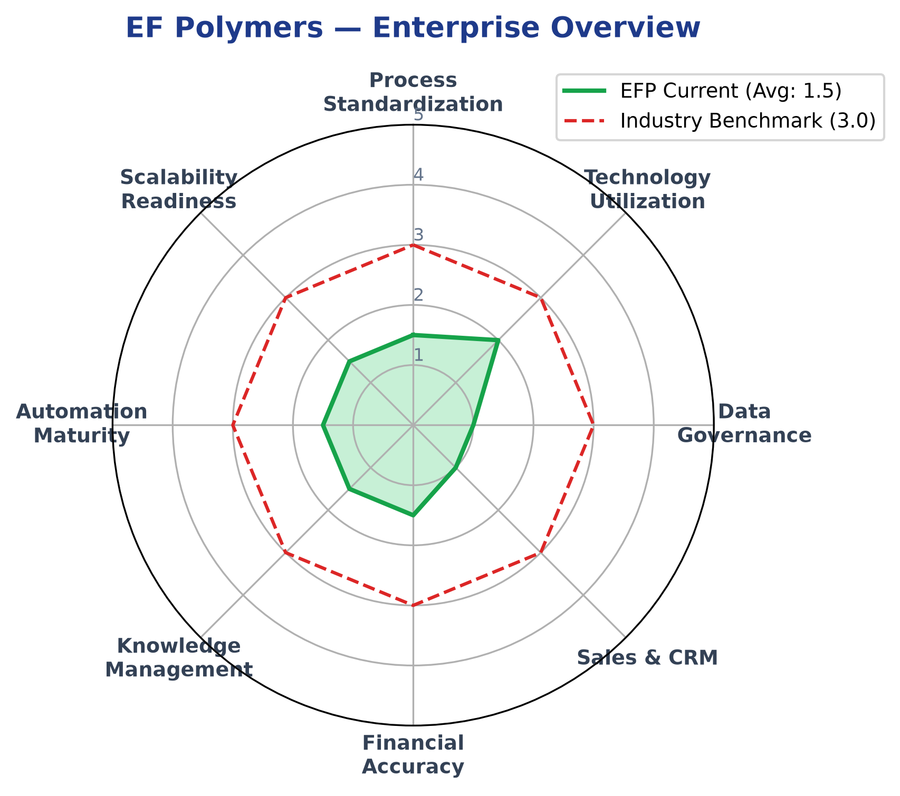
| Attribute | Detail |
|---|---|
| Company | EF Polymers (EFP) |
| Industry | Agri-tech / Bio-polymer Manufacturing |
| Core Product | Bio-polymer soil moisture retention granules |
| Secondary Product | Cocopeat (coconut husk soil-less growing media) |
| Revenue Model | B2B manufacturing + white-label + export + retail |
| Manufacturing | Udaipur (primary), Coimbatore (secondary / cocopeat) |
| Markets | India (pan-national), Middle East, Europe, Japan, USA, Africa, Australia |
| Product Shelf Life | 3 years |
| Estimated Headcount | 40–50+ personnel (across all departments) |
| Channel | Description | Key Account/Vertical |
|---|---|---|
| Retail (D2C/Dealer) | Multi-tier distribution via RSMs → Dealers → Farmers | Marketing & Retail Sales |
| B2B White-Label | Component supply to corporate partners | RCM (Jatin Jain) |
| Institutional (Seed) | Seed coating sales to seed companies & universities | Sameer Mahiskar |
| NGO/CSR | Bulk contracts with NGOs and CSR programs | Gaurav Dwivedi / Vikash Mehta |
| Government | State/federal procurement tenders | Shailendra Singh |
| International Export | Distributor-led B2B across MENA, Asia, Africa | Neha Pathak |
| Cocopeat Export | Container-load exports of soil-less media | Mohit Kumar Gupta |
| D2C Japan (Planned) | Website-based direct-to-consumer launch | Mohit / Yoshida-san |
| Dimension | Variants |
|---|---|
| Granule Sizes | <2mm (India), 2–4mm, 1.18–1.41mm (international) |
| SKU Sizes | 50g, 100g, 200g, 500g, 1kg, 5kg, 20–25kg, 100kg, bulk sacks (1000–1400kg) |
| Packaging Languages | Hindi, English, Spanish, French, Japanese + custom |
| Product Grades | A, B, C (different quality tiers) |
| Cocopeat Formats | Open-top grow bags, cocopit grow bags, 5kg blocks, pellets/coins |
| Custom Blends | Perlite, NPK formulations per client spec |
Operational Implication: This multi-variable product matrix (granule size × SKU × language × grade × blend) creates significant packaging procurement complexity and inventory management burden, evidenced by the 68% surplus pouch problem reported by Production.
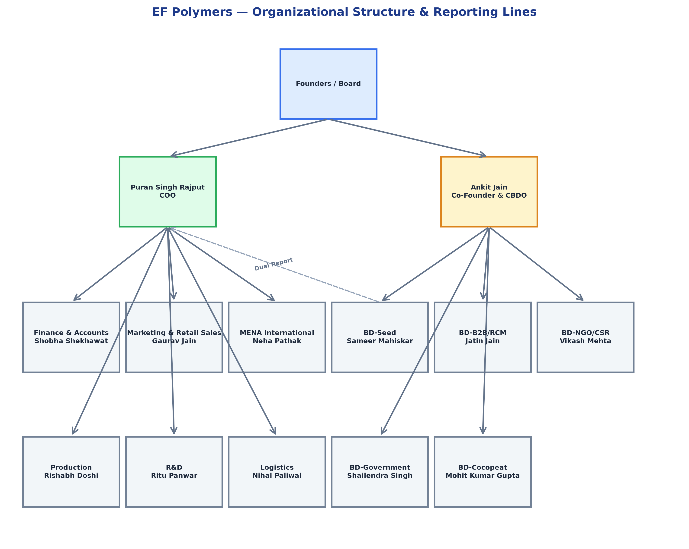
| Department | Personnel | Status |
|---|---|---|
| R&D | 4 active + 2 incoming + interns | Expanding |
| Production | 3 core + 4 recent hires | Recently expanded |
| Logistics | 2 FTE | Lean / at capacity |
| Finance & Accounts | 3 FTE | Stable |
| Marketing & Retail Sales | 3 office + field RSMs | Under-resourced |
| BD-Cocopeat | 4 active (Mohit, Ishwarya, Rajesh, Yoshida) | Stable |
| BD-NGO/CSR | 4 active + 1 vacant | Hiring |
| BD-Seed | 1 active + 1 planned hire | Under-resourced |
| BD-B2B/RCM | 7 active → 10 planned | Expanding |
| MENA International | 2 (Neha + 1 MT) | Lean |
| COO Office | 1 + oversight | — |
| CBDO Office | 1 + oversight | — |
Key Risk: BD-Seed operates as a solo single-point operation for a pan-India institutional vertical with a 90 MT annual target.
Scores are based on the 5-level maturity model (1=Initial, 2=Developing, 3=Standardized, 4=Managed, 5=Optimized). Evidence references are drawn from individual department audits.
| Department | Process | Technology | Data Quality | Documentation | Knowledge Mgmt | Overall |
|---|---|---|---|---|---|---|
| R&D | 2.0 | 2.0 | 1.5 | 2.5 | 1.5 | 2.0 |
| Production | 2.5 | 2.0 | 2.0 | 2.0 | 2.0 | 2.0 |
| Logistics | 2.0 | 1.5 | 1.5 | 1.5 | 2.0 | 1.5 |
| Finance & Accounts | 2.5 | 3.0 | 2.0 | 2.0 | 2.5 | 2.5 |
| Marketing / Retail Sales | 1.5 | 1.0 | 1.0 | 1.5 | 1.0 | 1.0 |
| BD — Cocopeat | 2.0 | 1.5 | 1.5 | 2.0 | 1.5 | 1.5 |
| BD — NGO/CSR | 1.5 | 1.0 | 1.0 | 1.5 | 1.0 | 1.0 |
| BD — Seed | 1.0 | 1.0 | 1.0 | 1.0 | 1.0 | 1.0 |
| BD — B2B/RCM | 2.0 | 1.5 | 1.5 | 1.5 | 1.5 | 1.5 |
| MENA International | 2.0 | 1.5 | 2.0 | 2.0 | 1.5 | 2.0 |
| COO Office | 2.0 | 2.0 | 1.5 | 2.0 | 2.0 | 2.0 |
| CBDO Office | 1.5 | 1.0 | 1.0 | 1.5 | 1.0 | 1.0 |
| Enterprise Average | 1.9 | 1.6 | 1.5 | 1.7 | 1.5 | 1.7 |
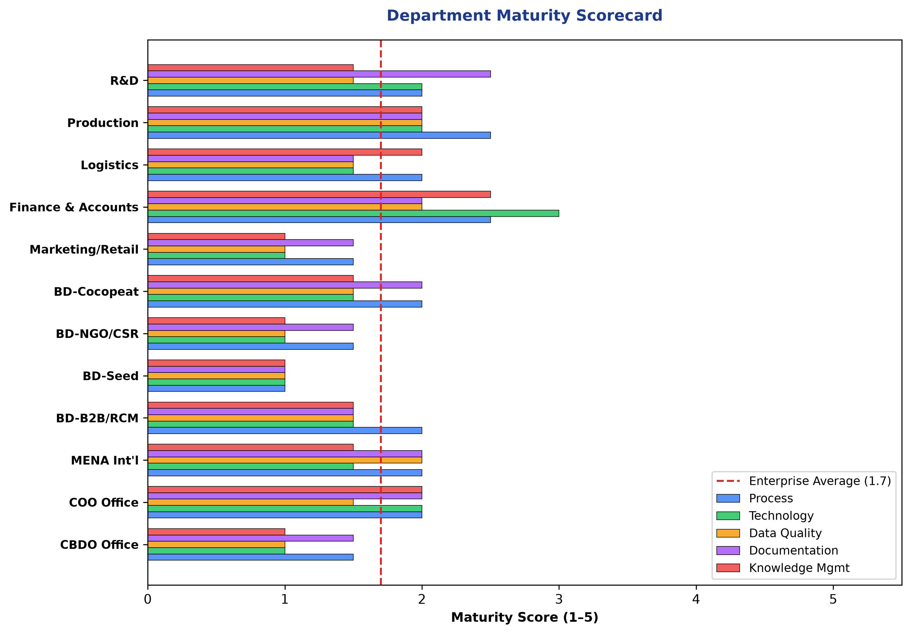
| Category | Current Score | Target Score (12-mo) | Gap | Confidence |
|---|---|---|---|---|
| Leadership & Governance | 2.5 | 3.5 | 1.0 | High |
| Strategy Alignment | 2.0 | 3.0 | 1.0 | High |
| Sales Operations | 1.0 | 3.0 | 2.0 | Confirmed |
| Customer Lifecycle | 1.5 | 3.0 | 1.5 | High |
| Operational Excellence | 2.0 | 3.0 | 1.0 | High |
| Process Standardization | 1.5 | 3.0 | 1.5 | High |
| Documentation | 1.7 | 3.0 | 1.3 | High |
| Knowledge Management | 1.5 | 2.5 | 1.0 | High |
| Technology Landscape | 2.0 | 3.5 | 1.5 | High |
| Data Quality | 1.5 | 3.0 | 1.5 | Confirmed |
| Reporting & Analytics | 1.5 | 3.0 | 1.5 | High |
| Automation Readiness | 1.5 | 2.5 | 1.0 | High |
| AI Readiness | 1.0 | 2.0 | 1.0 | High |
| Compliance Readiness | 2.0 | 3.0 | 1.0 | Medium |
| Financial Operations | 2.0 | 3.5 | 1.5 | Confirmed |
| Scalability | 1.5 | 3.0 | 1.5 | High |
| Change Readiness | 2.0 | 3.0 | 1.0 | Medium |
| Customer Experience | 2.0 | 3.0 | 1.0 | Medium |
| Overall Business Maturity | 1.7 | 3.0 | 1.3 | High |
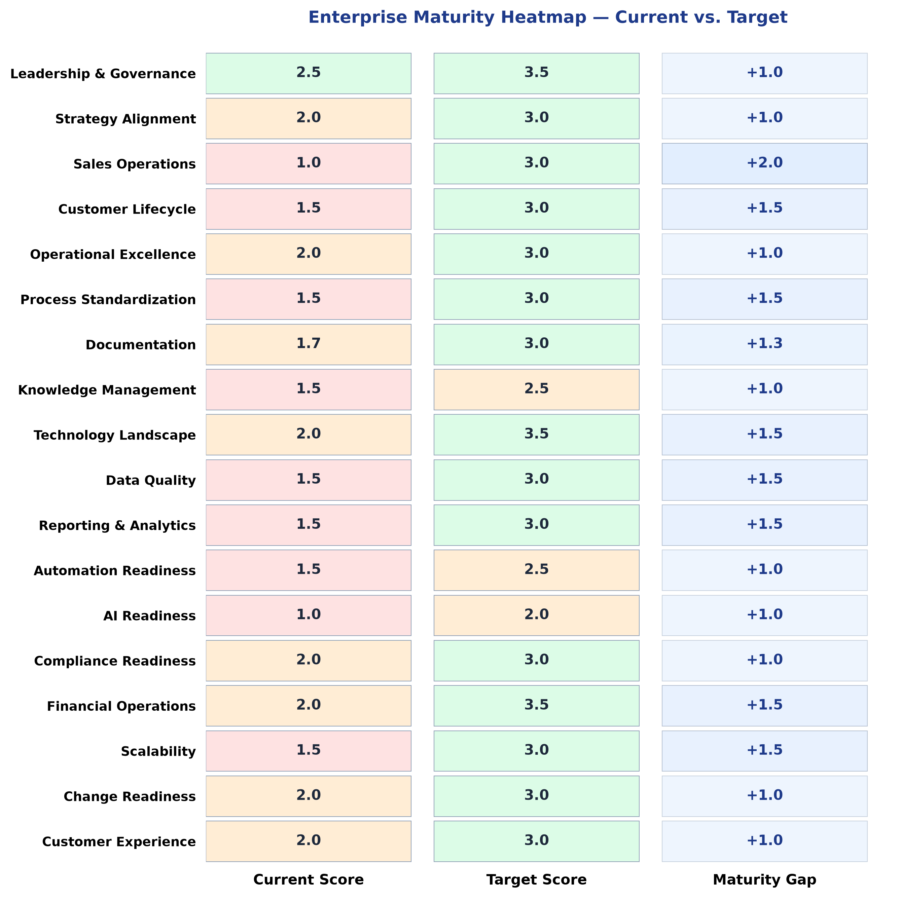
| Source → Target | Nature | Frequency | Risk Level |
|---|---|---|---|
| All BD Verticals → Logistics | Dispatch, freight, customs | Daily | CRITICAL Critical |
| All BD Verticals → Accounts | Invoicing, payment verification | Per-shipment | CRITICAL Critical |
| All BD Verticals → R&D | Technical data, trial reports, dosage | Per-pitch/trial | MEDIUM Medium |
| All BD Verticals → Production | Stock availability, lead times | Per-order | MEDIUM Medium |
| Marketing → Accounts | Payment verification, dispatching | Daily | MEDIUM Medium |
| Logistics → Accounts | Invoice generation pre-dispatch | Per-shipment | CRITICAL Critical |
| Logistics → Production | Manufacturing completion dates | Daily | CRITICAL Critical |
| Accounts → Production | Stock availability (manual phone) | Per-invoice | CRITICAL Critical |
| R&D → Production | Lab-to-commercial formulation handoff | Project-based | MEDIUM Medium |
| R&D → QC | Daily QC Tracker co-management | Daily | MEDIUM Medium |
| COO → All Departments | Approvals, reporting, oversight | Continuous | MEDIUM Medium |
| CBDO → All BD Verticals | Pipeline reviews, strategic alignment | Monthly | MEDIUM Medium |
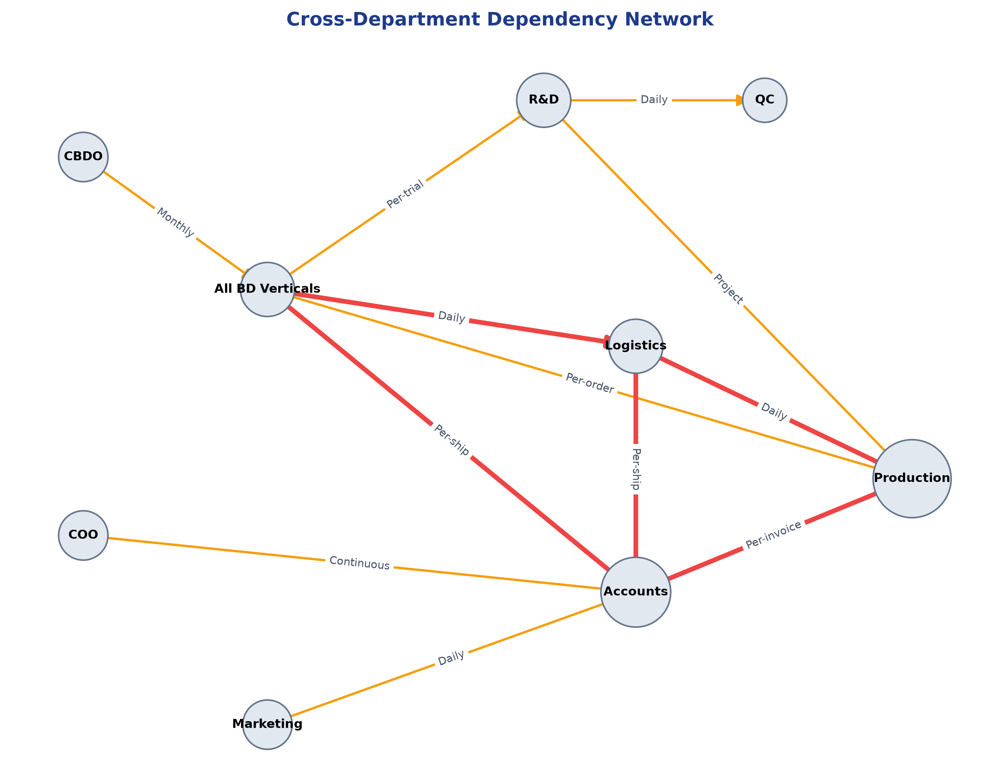
Systemic Bottleneck Identified: Logistics (2 FTE) and Accounts (3 FTE) are the operational convergence points for all revenue-generating activities. Every BD vertical, Marketing, and international sales must route through these two departments for order fulfillment.
| Severity | Count | Breakdown |
|---|---|---|
| CRITICAL High | 14 | CRM absence, data fragmentation, key-person dependencies, financial opacity |
| MEDIUM Medium | 14 | Follow-up gaps, manual processes, dual reporting, communication risks |
| LOW / OK Low | 8 | Collateral tracking, community drop-off, late-night decision capture |
| Total | 36 | Across 12 departments |
| # | Risk | Department(s) | Root Cause | Business Impact | Evidence |
|---|---|---|---|---|---|
| R01 | No Central CRM — Pipeline, lead ownership, and deal stages invisible at executive level | CBDO, All BD, MENA | No system of record adopted; each vertical uses ad-hoc spreadsheets | Revenue leakage, ownership conflicts, missed follow-ups | CBDO, BD-Seed, BD-NGO/CSR audits: confirmed zero CRM |
| R02 | COGS Margin Volatility (50%–77%) — Untraceable monthly cost swings | Accounts | No WIP valuation, no grade-based costing, unallocated packaging costs, no asset register | Financial reporting unreliable, investor confidence risk | Accounts audit: stated directly |
| R03 | Key-Person Dependency: R&D — Protocol approvals, grant writing, technical sign-offs bottlenecked on PD Manager | R&D | Single qualified authority for multi-geography compliance | Regulatory delays, trial backlogs if Ritu unavailable | R&D audit: stated directly |
| R04 | Key-Person Dependency: Logistics — Single logistics manager shared across domestic + export + B2B | Logistics, MENA, All BD | Only 2 FTE for all shipment types | Export SLA breaches, demurrage fees | Logistics & MENA audits |
| R05 | Disconnected Zoho WMS — Custom WMS siloed from Zoho Books ERP | Production, Accounts | System built independently; no API link to ERP | Manual reconciliation, inaccurate cost auditing | Production audit: stated directly |
| R06 | CargoX Gating Bottleneck — Export docs gated behind payment clearance with 10-day upload window | BD-Cocopeat | Finance approval dependency on international remittance | Demurrage fees, customer relationship damage | BD-Cocopeat audit: stated directly |
| R07 | Manual Field Geolocation Tracking — WhatsApp-based location sharing checked 3×/day manually | Marketing/Retail | No automated field force management app | 6–8 hrs/day staff time consumed | Marketing audit: stated directly |
| R08 | Surplus Custom Packaging — 68% packaging surplus from MOQ constraints | Production | Printer MOQ (16K) vs. order size (5K) mismatch | Warehouse cost, write-off exposure on design changes | Production audit: stated directly |
| R09 | WhatsApp Order Intake — Incomplete order specs via WhatsApp text | Logistics | No structured order intake form | Shipment delays, manual follow-up overhead | Logistics audit: stated directly |
| R10 | No Real-Time Stock Visibility — Accounts cannot check inventory before invoicing | Accounts, Production | Zoho Inventory not exposing live stock to billing | Manual phone calls per invoice, billing delays | Accounts audit: stated directly |
| R11 | Scattered R&D Data — Research across 8–10 disconnected spreadsheets | R&D | No centralized research database | Redundant testing, data loss, repeat trial costs | R&D audit: stated directly |
| R12 | Manual GST/TDS Reconciliation — 1–2 weeks per tax cycle | Accounts | Manual portal-to-Books matching | 30–40 hrs/month compliance overhead | Accounts audit: stated directly |
| R13 | Tertiary Sales Invisibility (RCM) — Zero data below depot tier across 10,000 retail stores | BD-B2B/RCM | No API or data sharing with RCM retail layer | Demand planning blind spot, inventory risk | B2B/RCM audit: stated directly |
| R14 | Data Security / Contact Continuity — ~90% of communications on personal WhatsApp numbers | BD-B2B/RCM, MENA | No company-owned SIMs or business number policy | Customer relationship loss on employee exit | B2B/RCM & MENA audits |
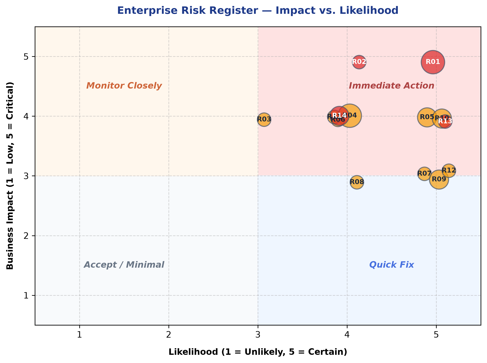
The audit identified significant divergence between documented/stated processes and actual operational behavior:
| Area | Stated/Intended Process | Actual Observed Process | Gap Type |
|---|---|---|---|
| Order Intake | Structured PO with complete specs → billing → dispatch | WhatsApp text with missing fields → manual chase for pin codes, GSTIN, packaging specs | Shadow Process |
| Inventory Management | Zoho Inventory as system of record | Manual phone calls to Production Manager; weekly stock sheets in Google Sheets | Duplicate System |
| Sales Pipeline | Vertical leads track pipeline stages | Memory-based follow-ups every 4–5 days from unstructured spreadsheets | Tribal Knowledge |
| Field Compliance | Mobile app-based geolocation tracking | WhatsApp location sharing + manual address cross-referencing 3×/day | Shadow Process |
| Payment Confirmation | Zoho Books bank reconciliation | WhatsApp screenshot of payment receipt → manual verification call to Accounts | Shadow Process |
| Project Management | Asana (adopted then abandoned) | Reverted to Excel spreadsheets | Tool Abandonment |
| COGS Calculation | System-computed cost of goods | Manual spreadsheet averaging without WIP, grade-based, or overhead allocation | Process Gap |
| Customer Master Data | Shared customer database | Accounts, Sales, and Logistics each maintain separate records; repeated data requests | Data Duplication |
| Export Documentation | Integrated invoicing + shipping | Zoho Books + manual logistics spreadsheet (disconnected) | System Fragmentation |
| Marketing ROI | Budget-to-outcome tracking | No ROI tracking; budget approved without measurable conversion metrics | Missing Process |
| System | Category | Owner | Users | Utilization | Integration |
|---|---|---|---|---|---|
| Zoho Books | Accounting/ERP | Finance | Accounts, Logistics, Marketing | Moderate | Bank feeds (auto); no live inventory link |
| Zoho Inventory | Inventory Mgmt | Finance | Accounts, Production | Low | Linked to Books but lacks grade-based costing |
| Zoho Expense | Expense Mgmt | Finance | All employees | Moderate | 3-level approval flow active |
| Zoho Payroll | Payroll | Finance | HR/Finance | Moderate | Linked to Zoho People |
| Zoho People | HRMS | Finance | HR/Finance | Low | — |
| Custom Zoho WMS | Warehouse Mgmt | Production | Production | In-progress | [X] Disconnected from Zoho Books |
| Google Sheets | Tracking (everything) | All departments | Everyone | Overextended | [X] No integrations |
| Google Drive | Document Storage | R&D, Marketing | R&D, Field teams | Moderate | Manual upload only |
| Communications | All | All | Overextended (de facto ERP) | [X] No data capture | |
| Gmail | All | All | Standard | — | |
| Slack | Internal comms | Select teams | BD-B2B, MENA | Low–Moderate | — |
| Power BI | Dashboarding | R&D | R&D (onboarding) | Emerging | Not yet connected |
| Google Ads | Paid acquisition | BD-Cocopeat | Marketing, BD | Active | [X] No CRM integration |
| LinkedIn Ads | Paid acquisition | BD-Cocopeat | Marketing, BD | Active | [X] No CRM integration |
| CargoX | Export compliance | BD-Cocopeat | Logistics, BD | Active | Manual upload |
| Contactout / Apollo | Lead enrichment | BD-NGO/CSR | BD | Ad-hoc | — |
| Dripify | LinkedIn automation | BD-Cocopeat | BD | [X] Subscription lapsed | — |
| Canva | Design/Proposals | BD-NGO/CSR | BD | Active | — |
| Field Tracking App | Sales compliance | COO | Field RSMs | Partial (network issues) | — |
| Dimension | Score (1–5) | Evidence |
|---|---|---|
| Cloud Adoption | 2.5 | Zoho suite is cloud-based; most data still in local spreadsheets |
| System Integration | 1.0 | Zoho WMS disconnected from Books; Sheets disconnected from everything |
| Data Accessibility | 1.5 | Data trapped in 30+ spreadsheets and personal devices |
| Process Digitization | 1.5 | Paper POs, WhatsApp photos, paper field diaries |
| Reporting Capability | 1.5 | No live dashboards; Power BI in early onboarding |
| API Readiness | 1.5 | Zoho has APIs but none are utilized |
| Digital Maturity Index | 1.6 — Emerging | — |
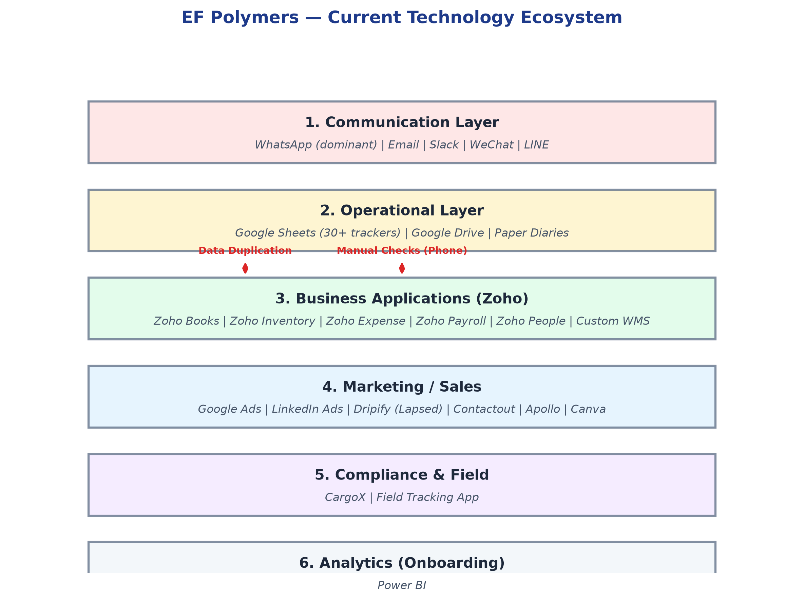
| Gap | Impact | Recommended Action |
|---|---|---|
| No CRM | Pipeline invisible; revenue leakage | Implement Zoho CRM (aligns with existing Zoho stack) |
| Zoho WMS ↔ Books disconnect | Manual cost reconciliation | API integration or rebuild within Zoho ecosystem |
| No structured order intake | Shipment delays from incomplete data | Digital order form integrated with Zoho |
| No real-time inventory visibility | Phone-call-based stock checks | Zoho Inventory live API to Accounts |
| No automated field tracking | 6–8 hrs/day manual compliance | Zoho FSM or equivalent with GPS auto-tracking |
| No knowledge base | Research data fragmented across 8–10 sheets | Centralized R&D database with version control |
| No marketing analytics | Zero ROI on ad spend | UTM tracking + Zoho Analytics integration |
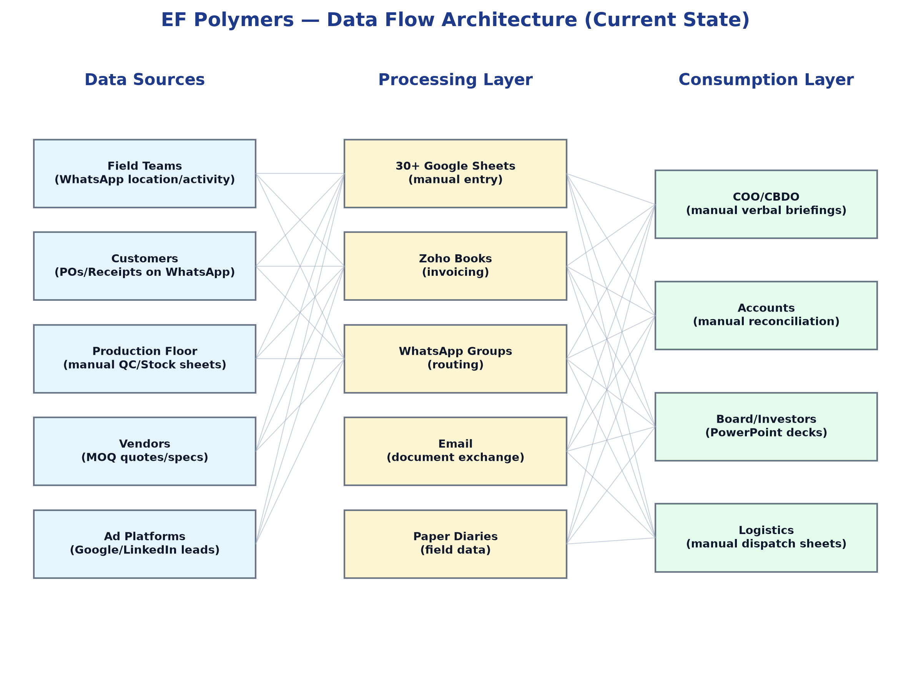
| Data Domain | Intended SoT | Actual SoT | Conflict |
|---|---|---|---|
| Customer Master | Zoho Books | Scattered across BD spreadsheets, WhatsApp, email | WARNING: Multiple competing sources |
| Inventory/Stock | Zoho Inventory | Production Manager's personal knowledge + weekly sheets | WARNING: No real-time source |
| Sales Pipeline | None designated | 5+ separate department spreadsheets | WARNING: No SoT exists |
| Financial (COGS) | Zoho Books | Manual spreadsheet averaging | WARNING: Unreliable SoT |
| R&D Trial Data | Google Drive | 8–10 disconnected Excel files | WARNING: Fragmented SoT |
| Logistics/Dispatch | Zoho Books | Parallel manual tracking spreadsheet | WARNING: Dual systems |
| Employee Expenses | Zoho Expense | WhatsApp photos + manual forwarding | WARNING: Shadow process |
| Field Compliance | Field tracking app | WhatsApp location shares | WARNING: Parallel tracking |
| Dimension | Score (1–5) | Key Issues |
|---|---|---|
| Accuracy | 2.0 | COGS volatility; manual transcription errors |
| Completeness | 1.5 | Missing fields in order intake; no tertiary sales data |
| Consistency | 1.0 | Same data entered differently across spreadsheets |
| Timeliness | 1.5 | Retrospective monthly reporting; no real-time dashboards |
| Uniqueness | 1.5 | Customer data duplicated across departments |
| Overall Data Quality | 1.5 | — |
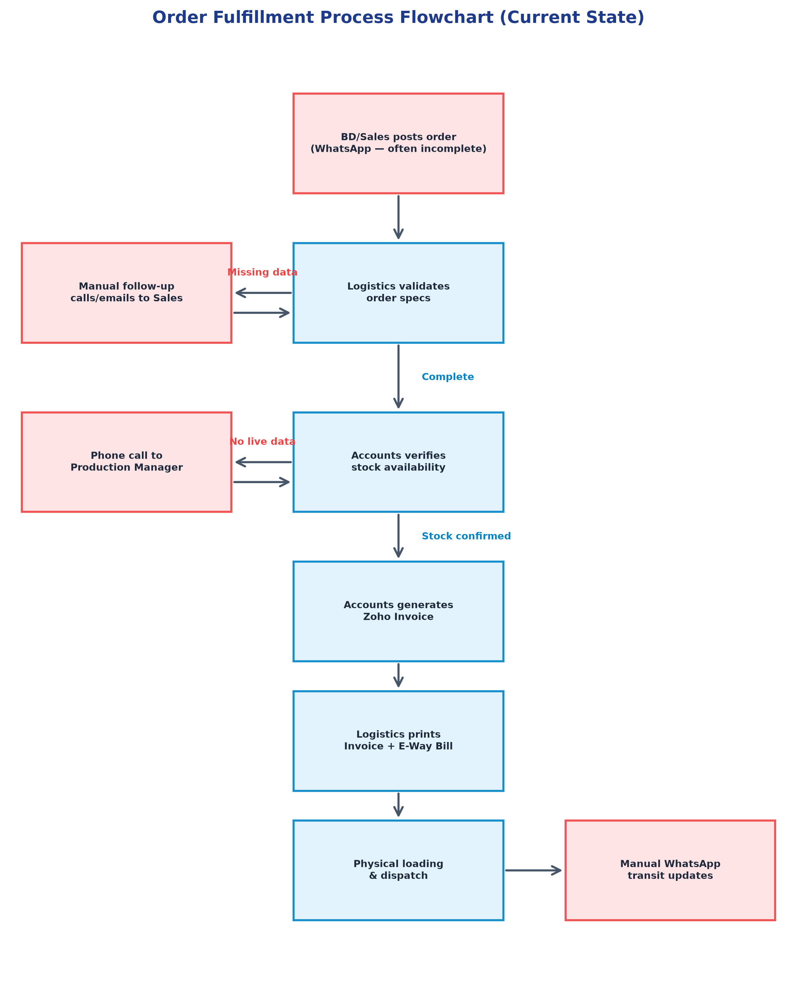
| # | Bottleneck | Location in Workflow | Estimated Time Waste | Root Cause |
|---|---|---|---|---|
| B01 | Incomplete order data from WhatsApp | Order Intake | 15–30 min per order | No structured intake form |
| B02 | Manual stock verification phone calls | Pre-Invoicing | 10–15 min per invoice | No live inventory visibility |
| B03 | Manual GST/GSTIN data lookup | Invoicing | 5–10 min per new customer | No shared customer master |
| B04 | Disconnected logistics tracking | Post-Dispatch | 20–30 min per shipment update | Zoho ↔ Sheets disconnect |
| B05 | Manual field compliance tracking | Sales Monitoring | 6–8 hours/day | No automated geo-tracking |
| B06 | Manual target vs. actual reconciliation | Sales Reporting | 3–4 hours/week | Zoho Books quantity gap |
| B07 | Paper PO → manual entry | Field Sales | 15–20 min per PO | No digital PO creation |
| B08 | WhatsApp-based payment confirmation | Payment Clearance | 10–20 min per payment | No automated bank alerts |
| B09 | Manual R&D data aggregation for board reports | Executive Reporting | 4–6 hours/month | No cross-timezone dashboard |
| B10 | Manual email-by-email cold outreach | BD Lead Generation | Hours/day per BD exec | No email automation platform |
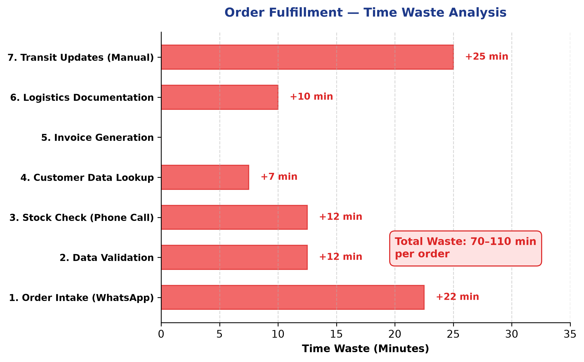
| Workflow | Manual Effort | Frequency | Rule-Based | Automation Classification |
|---|---|---|---|---|
| Order intake data capture | High | Daily | Yes | [OK] Automate After Standardization |
| Invoice generation from PO | Medium | Daily | Yes | [OK] Automate Immediately (Zoho workflow) |
| Stock availability check | High | Per-invoice | Yes | [OK] Automate Immediately (Zoho API) |
| GST/TDS reconciliation | Very High | Monthly | Partially | [OK] Automate After Standardization |
| Field force geo-tracking | Very High | 3×/day | Yes | [OK] Automate Immediately (FSM tool) |
| Payment confirmation alerts | Medium | Per-payment | Yes | [OK] Automate Immediately (bank API/Zoho) |
| Cold email outreach | High | Daily | Yes | [OK] Automate Immediately (email tool) |
| Lead follow-up reminders | High | Every 4–5 days | Yes | [OK] Automate Immediately (CRM) |
| Sales target vs. actuals | High | Monthly | Yes | [OK] Automate After Standardization |
| Packaging MOQ management | Medium | Per-order | Partially | MONITOR: Monitor |
| R&D data aggregation | Medium | Monthly | Partially | [OK] Automate After Standardization |
| WhatsApp data extraction | Very High | Daily | Partially | [OK] Automate After Standardization |
| Collateral reorder alerts | Low | Monthly | Yes | [OK] Automate Immediately |
| Board report compilation | High | Monthly | Partially | MONITOR: Monitor |
| # | Opportunity | Department | AI Use Case | Readiness | Expected Impact |
|---|---|---|---|---|---|
| AI-01 | Knowledge Assistant for R&D | R&D | RAG-based search across trial data, QC results, and regulatory filings | MEDIUM Ready with Constraints (data scattered) | Reduce 25% of technical query turnaround time |
| AI-02 | Automated Lead Enrichment | All BD | AI-powered company profiling and contact enrichment | LOW / OK Ready | Replace manual Google/ChatGPT sourcing |
| AI-03 | Email Drafting Copilot | All BD | AI-assisted personalized cold outreach based on company context | LOW / OK Ready | Increase response rate from 5% baseline |
| AI-04 | Proposal Generation | BD-NGO/CSR, BD-Seed | AI-generated first drafts from templates + client parameters | MEDIUM Ready with Constraints (templates needed) | Reduce proposal time from 1–2.5 days to hours |
| AI-05 | Demand Forecasting | Production, B2B/RCM | Predictive inventory planning from historical sales data | CRITICAL Not Ready (no clean historical data) | Reduce surplus packaging and stockouts |
| AI-06 | Intelligent Document Classification | Logistics, Accounts | Auto-classification of POs, invoices, and shipping documents | MEDIUM Ready with Constraints | Reduce manual document routing |
| AI-07 | WhatsApp Chatbot | BD-B2B/RCM, Marketing | Automated FAQ handling, database logging, QC feedback | MEDIUM Ready with Constraints | Reduce 90% community drop-off; capture data |
| AI-08 | Meeting Summaries | All | Auto-transcription and action item extraction from Google Meet/Zoom | LOW / OK Ready | Save 2–3 hours/week per manager |
| AI-09 | Field Photo Analysis | Marketing, R&D | Crop health assessment from field photos | CRITICAL Not Ready (no training data) | Long-term R&D value |
| AI-10 | COGS Anomaly Detection | Accounts | Flag unusual cost fluctuations automatically | MEDIUM Ready with Constraints (need clean data first) | Early warning on margin erosion |
| Dimension | Score (1–5) | Rationale |
|---|---|---|
| Data Availability | 1.5 | Data exists but is fragmented across 30+ spreadsheets |
| Data Quality | 1.5 | Inconsistent, duplicated, manually entered |
| Process Standardization | 1.5 | Workflows are not standardized enough for reliable automation |
| Decision Standardization | 2.0 | Some rule-based decisions (QC, order routing) are standardizable |
| Human Oversight Readiness | 3.0 | Leadership receptive; CBDO has prioritized CRM |
| Governance | 1.0 | No data governance, no AI policies |
| Overall AI Readiness | 1.6 — Not Ready | Process standardization and data consolidation must precede AI |
Recommendation: AI initiatives should NOT be prioritized before Phase 2 of the transformation roadmap. Process standardization and CRM implementation must establish clean, accessible data foundations first.
| # | Recommendation | Type | Impacted Depts | Priority | Expected Outcome |
|---|---|---|---|---|---|
| S01 | Implement Zoho CRM across all BD verticals, MENA, and Marketing | Technology | All BD, MENA, Marketing, CBDO | CRITICAL Critical | Unified pipeline; real-time executive visibility |
| S02 | Integrate Zoho WMS ↔ Zoho Books via API or rebuild | Technology | Production, Accounts | CRITICAL Critical | Eliminate manual cost reconciliation |
| S03 | Implement structured digital order intake form (replace WhatsApp text orders) | Process | Logistics, All BD | CRITICAL Critical | Reduce per-order waste by 30–45 min |
| S04 | Enable real-time Zoho Inventory visibility for Accounts | Technology | Accounts, Production | CRITICAL Critical | Eliminate manual stock-check phone calls |
| S05 | Establish shared Customer Master Database in Zoho CRM | Data | Accounts, BD, Logistics | CRITICAL Critical | Single source of truth for all customer data |
| S06 | Implement grade-based WIP costing methodology | Process/Finance | Accounts, Production | CRITICAL Critical | Resolve COGS volatility |
| S07 | Deploy automated field force tracking (Zoho FSM or equivalent) | Technology | Marketing/Retail | MEDIUM High | Recover 6–8 hrs/day of manual tracking effort |
| # | Recommendation | Type | Priority | Expected Outcome |
|---|---|---|---|---|
| S08 | Configure automated bank reconciliation rules in Zoho Books | Automation | MEDIUM High | Reduce GST compliance time from 2 weeks to 2–3 days |
| S09 | Implement email automation platform for cold outreach (separate domain) | Technology | MEDIUM High | Protect primary domain; increase outreach efficiency |
| S10 | Deploy CRM-integrated follow-up cadence with automated reminders | Automation | MEDIUM High | Eliminate memory-based lead follow-ups |
| S11 | Create centralized R&D knowledge database (migrate from 8–10 spreadsheets) | Data | MEDIUM High | Reduce redundant testing; preserve institutional knowledge |
| S12 | Activate Zoho asset register for factory depreciation tracking | Finance | MEDIUM High | Include depreciation in product costing |
| S13 | Establish device/SIM ownership policy for customer-facing roles | Governance | MEDIUM High | Protect customer relationships from attrition risk |
| S14 | Transition from paper POs to digital mobile order forms for field salesmen | Process | MEDIUM Medium | Reduce manual data entry; improve PO accuracy |
| # | Recommendation | Type | Priority | Expected Outcome |
|---|---|---|---|---|
| S15 | Implement Zoho Analytics dashboards for executive reporting | Technology | MEDIUM Medium | Real-time KPIs; eliminate manual board report compilation |
| S16 | Launch WhatsApp chatbot for B2B/RCM community management & QC feedback | AI | MEDIUM Medium | Capture structured data from 2,000+ community contacts |
| S17 | Deploy R&D Knowledge Assistant (RAG-based) over centralized trial database | AI | MEDIUM Medium | Accelerate technical query turnaround |
| S18 | Integrate carrier schedule APIs for automated vessel tracking | Automation | LOW / OK Low | Reduce manual ocean freight monitoring |
| S19 | Explore RCM data-sharing integration for store-level visibility | Data | LOW / OK Low | Improve demand forecasting accuracy |
| S20 | Evaluate packaging MOQ optimization strategy (consortium buying or flexible printers) | Process | LOW / OK Low | Reduce 68% surplus packaging waste |
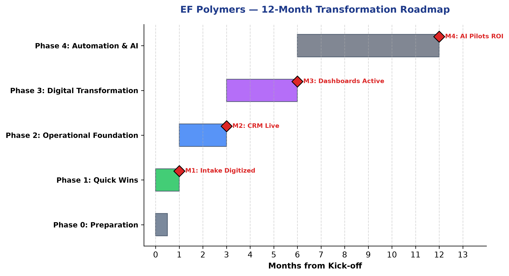
| Initiative | Business Value | Urgency | Effort | Risk Reduction | Strategic Alignment | Overall Priority |
|---|---|---|---|---|---|---|
| S01: Zoho CRM | 10 | 10 | 6 | 9 | 10 | P1 — Critical |
| S02: WMS Integration | 8 | 8 | 5 | 8 | 8 | P1 — Critical |
| S03: Digital Order Intake | 7 | 9 | 3 | 7 | 7 | P1 — Quick Win |
| S04: Live Inventory | 8 | 9 | 3 | 7 | 8 | P1 — Quick Win |
| S05: Customer Master | 8 | 8 | 5 | 8 | 9 | P1 — Critical |
| S06: WIP Costing | 9 | 8 | 7 | 8 | 8 | P1 — Critical |
| S07: Field Tracking | 7 | 7 | 4 | 6 | 6 | P1 — Quick Win |
| S08: Bank Reconciliation | 6 | 6 | 4 | 5 | 6 | P2 — High |
| S09: Email Automation | 6 | 6 | 3 | 5 | 6 | P2 — High |
| S10: CRM Follow-ups | 7 | 7 | 2 | 6 | 7 | P2 — High |
| S11: R&D Database | 7 | 5 | 6 | 7 | 7 | P2 — High |
| S15: Analytics Dashboards | 7 | 5 | 5 | 5 | 8 | P2 — Medium |
| S16: WhatsApp Chatbot | 5 | 4 | 5 | 4 | 6 | P3 — Medium |
| S17: R&D AI Assistant | 6 | 3 | 7 | 5 | 7 | P3 — Medium |
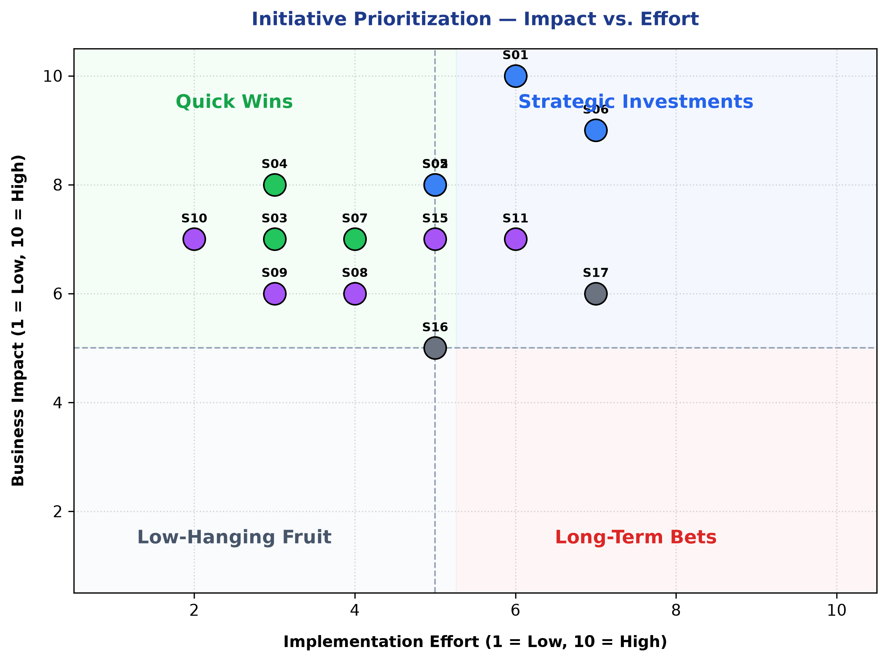
| Phase | KPI | Baseline (Current) | Target (Post-Phase) |
|---|---|---|---|
| Phase 1 | Order intake time per order | 70–110 min | <30 min |
| Phase 1 | Manual stock-check calls/day | 10–15 calls | 0 (automated) |
| Phase 1 | Field tracking manual hours/day | 6–8 hrs | <1 hr |
| Phase 2 | Pipeline visibility (% leads tracked in CRM) | 0% | 100% |
| Phase 2 | COGS variance month-to-month | ±27% | ±5% |
| Phase 2 | Customer data duplication incidents/month | Unknown (frequent) | 0 |
| Phase 3 | GST reconciliation time | 1–2 weeks | 2–3 days |
| Phase 3 | Executive reporting prep time | 4–6 hrs/month manual | Real-time dashboard |
| Phase 3 | Cold outreach response rate | 5% | 8–12% (email automation) |
| Phase 4 | AI-assisted query turnaround (R&D) | 1–4 hours | <30 min |
| Phase 4 | Community engagement rate (RCM) | 10% (200/2000) | 30%+ |
| Element | Recommendation |
|---|---|
| Executive Sponsor | COO (Puran Singh Rajput) for operational initiatives; CBDO (Ankit Jain) for CRM and sales |
| Program Manager | Dedicated transformation lead (external or internal appointment recommended) |
| Steering Cadence | Bi-weekly executive review for Phase 1–2; monthly for Phase 3–4 |
| Change Management | Department-level training plans per tool rollout; champion model (1 power user per department) |
| Risk Monitoring | Monthly risk review against this report's register (R01–R14) |
| Budget Model | Prioritize existing Zoho ecosystem to minimize new licensing; phased investment aligned to quarterly revenue cycles |
| # | Department | Stakeholder Interviewed | Audit File |
|---|---|---|---|
| 1 | R&D | Ritu Panwar (PD Manager) | production-rd-ritu-panwar-analysis.md |
| 2 | Production Management & QC | Rishabh Doshi (Production Manager) | production-rishabh-doshi-analysis.md |
| 3 | Logistics | Nihal Paliwal (Logistics Manager) | production-logistics-nihal-m-analysis.md |
| 4 | Finance & Accounts | Shobha Shekhawat (Finance Head) | finance-accounts-shobha-shekhawat-analysis.md |
| 5 | Marketing & Retail Sales | Gaurav Jain (Department Lead) | marketing-retail-sales-gaurav-jain-analysis.md |
| 6 | BD — Cocopeat | Mohit Kumar Gupta (BD Executive) | bd-cocopeat-mohit-kumar-analysis.md |
| 7 | BD — NGO/CSR | Gaurav Dwivedi (BD Executive) | bd-ngo-csr-gaurav-dwivedi-analysis.md |
| 8 | BD — Seed | Sameer Mahiskar (BD Manager) | bd-seed-sameer-mahiskar-analysis.md |
| 9 | BD — B2B/RCM | Jatin Jain (AM-BD) | company-b2b-rcm-jatin-jain-analysis.md |
| 10 | MENA & International Sales | Neha Pathak (BD Manager) | mena-international-sales-neha-pathak-analysis.md |
| 11 | COO Office | Puran Singh Rajput (COO) | cxo-operations-finance-puran-sir-analysis.md |
| 12 | CBDO Office | Ankit Jain (CBDO / Co-Founder) | cxo-sales-bd-ankit-sir-analysis.md |
| Evidence Type | Items Used | Confidence Impact |
|---|---|---|
| Stakeholder interview transcripts | 12 | Primary evidence — High reliability |
| Tool stack declarations | 12 | Direct statements — Confirmed |
| Quantitative metrics (stated directly) | 50+ | High confidence (self-reported with cross-validation) |
| Workflow observations (mermaid flows) | 8 | Moderate confidence (derived from interviews) |
| Inferred relationships | 20+ | Medium confidence (marked as inferred) |
| Missing evidence (not audited) | Government BD vertical (Shailendra Singh), Design team, HR | Gaps reduce overall confidence by ~5% |
This report was prepared following the Enterprise Business Transformation Consulting Framework v1.0. All findings are evidence-backed with confidence ratings. Recommendations are prioritized by business impact, feasibility, and organizational readiness. The transformation roadmap is designed for phased execution to minimize operational disruption while delivering incremental value.
Next Steps: 1. Executive review and approval of this report 2. Prioritization alignment workshop with COO and CBDO 3. Kick-off Phase 0 — Preparation (governance, baselines, sponsor assignment) 4. Detailed CRM requirements gathering (Phase 2 planning)